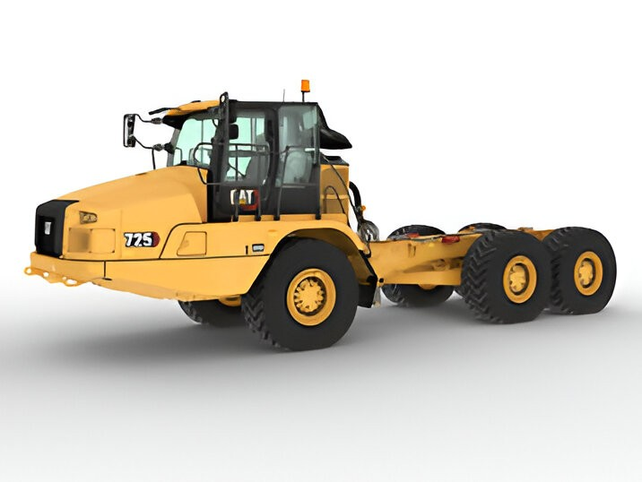
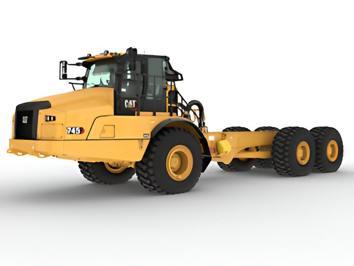
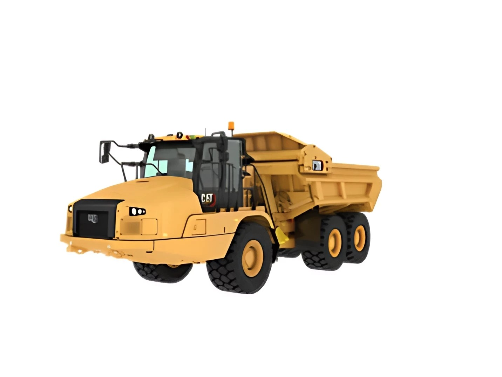
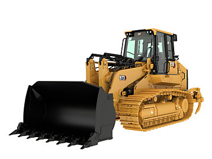
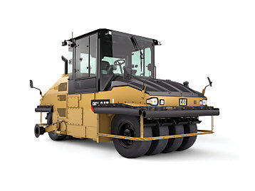
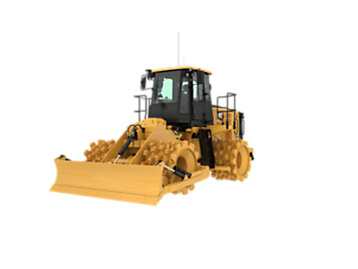

Todos los equipos incluyen asesoría de configuración, inspección previa a la entrega y plan recomendado de mantenimiento para maximizar vida útil y rendimiento en operación real.
Los camiones articulados transportan un amplio
espectro de
materiales en distintas aplicaciones y condiciones del suelo.
El simple funcionamiento y la comodidad de estilo automotriz, así como la combinación
de puntos de servicio e intervalos prolongados de servicio de estos camiones de descarga
le permiten enfocarse en su trabajo y perder menos tiempo y dinero en realizar el
mantenimiento.

Distancia entre ejes estándar: 3979 mm
Carga útil nominal: 27.6 t
Modelo de motor: TitanMaq C9.3
Contactar al
distribuidor por Precio y Disponibilidad

Distancia entre ejes estándar: 4590 mm
Carga útil nominal: 49.9 t
Modelo de motor: TitanMaq C18
Contactar al
distribuidor por Precio y Disponibilidad

Modelo de motor: TitanMaq C13
Carga útil nominal: 27.1 t
Colmada (SAE 2:1): 16.9 m³
Contactar al
distribuidor por Precio y Disponibilidad
Compactar de acuerdo con las especificaciones es muy
importante
para aplicaciones de suelos, rellenos sanitarios y pavimentación.
Los compactadores TitanMaq están específicamente diseñados para
todo tipo de operación de compactación.

Potencia bruta: SAE J1995:2014 - 212 kW
Potencia neta - SAE J1349:2011 - 186 kW
Potencia neta: ISO 9249:2007 - 186 kW
Contactar al
distribuidor por Precio y Disponibilidad

Peso vacío: 10000 kg
Peso máximo con lastre: 27000 kg
Ancho de compactación: 2090 mm
Contactar al
distribuidor por Precio y Disponibilidad

Potencia bruta (SAE J1995:2014): 212 kW
Potencia neta (SAE J1349:2011): 186 kW
Potencia neta (ISO 9249:2007): 186 kW
Contactar al
distribuidor por Precio y Disponibilidad